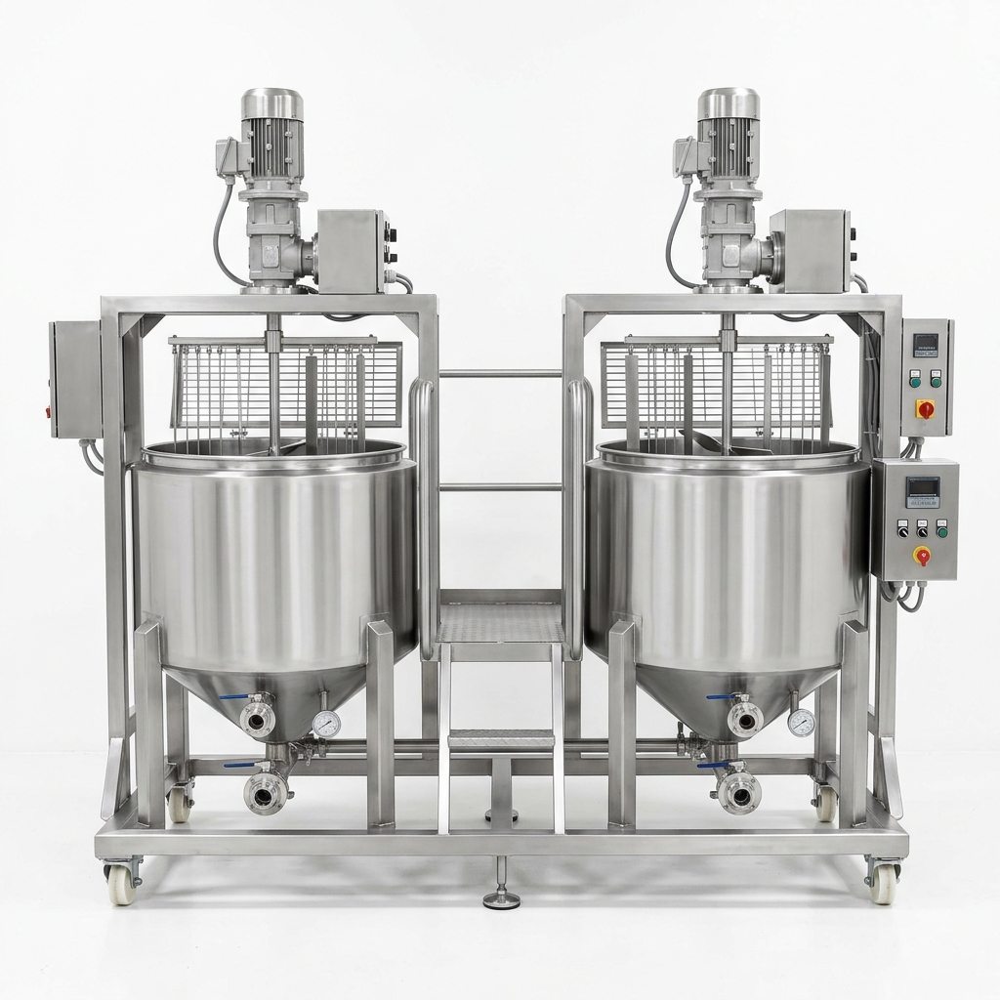

CHEESE VAT SYSTEM
Cheese Vat Tank
Price:
Inquiry for Best Quote
- Milk Heating & Preparation: Heats milk to required temperatures for cheese making
- Triple Wall SS-304 Construction: Heavy duty inner, intermediate & outer shells
- Top-Mounted Agitator: 1 HP & 20 RPM flange-mounted geared motor
- 50mm Glass Wool Insulation: Maintains constant thermal performance
- Hygienic Valves & Fittings: 51 mm Butterfly Hygienic Outlet Valve & SMS Unions
We provide a quality-proven range of Cheese Vat Tanks known for effectual functioning among our valued clients. It is basically used for processing cheese in a hygienic environment. This tank features an open and close model agitation and cutting device with speed variations.
Customised Technical Specifications
Equipment Type
Vat Tank / Cheese Vat
Brand
ALFA TECH INDIA
Finishing
Polished High-Grade Finish
Application
Industrial Cheese Processing & Milk Heating
Design & Manufacturing
Good Manufacturing Procedure (GMP) & Good Engineering Practice (GEP)
Tank Type
Round – Triple Wall
Working / Design Temp
Working: 60°C | Design: 95°C
Inner Shell & Bottom
3 mm Thick, SS-304
Intermediate Shell
2.5 mm Thick, SS-304
Outer Shell & Bottom
2 mm Thick, SS-304
Insulation
50 mm High Density Glass Wool
Agitator
Top Mounted, 1 HP & 20 RPM, Flange Mounted Geared Motor
Nozzles & Outlet Valve
51 mm Outlet, Side Thermowell, 51 mm Butterfly Hygienic Valve
Nozzle Connection
SMS Unions
Legs
4 Heavy-Duty SS-304 Legs
Services Required
Water Inlet, Water Outlet, Three Phase Electrical Connection